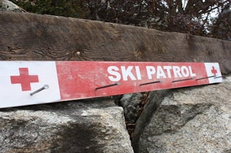
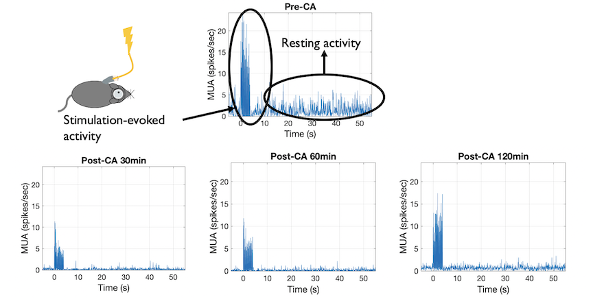
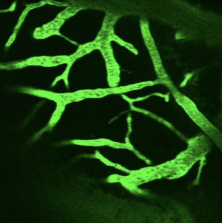
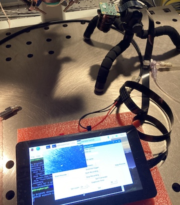
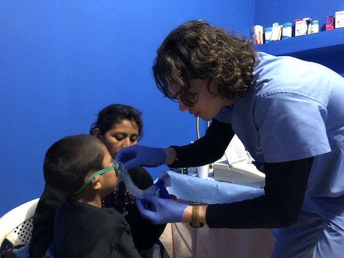
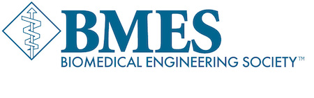
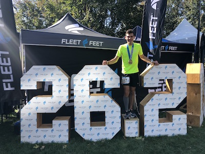
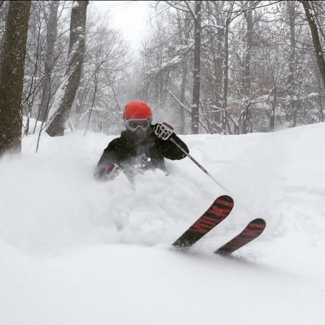
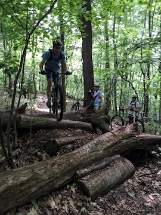

Ich heiße Andrew. Ich habe 7 Leute in mein Haus. Mein Vater heißt Flo, und meine Mutter heißt Mio. Ich habe 3 schwestern auch. Mein hund heißt Maine und er ist ein Poodle.
Ich spreche:
Englisch
Romanisch
Deutsch
Ausbildung
Swanson Schule für Technik - Universität Pittsburgh (August 2018 - Mai 2022)
Bachelor Ausbildung in Technik – Electrotechnik Kleiner Abschluss in Chemie
Portfolio
Kleidung
Was ziehe ich an?
Lebensmittel
Was esse ich?
Leben
Wo wohne und lerne ich?
Tagesroutine

Was ist mein Tagesroutine?
VIP
Wer ist wichtig für mich?
Project
Alles was zählt
Research
In vivo Assessment of Cortical Neural and Metabolic Activity After Pediatric Cardiac Arrest (2018 - present)
PI: Dr. Alberto Vazquez, PhD
The objective of this project is to assess the function of the neurovascular unit after cardiac arrest. Neuronal local field potentials were measured in vivo using microelectrodes, cortical blood flow was measured using laser doppler flowmetry, and local metabolism was measured using optical imaging. We finished recording and analyzing the data, and are currently preparing it for publication.
My role on this project is data analysis and manuscript preparation. I developed the MATLAB scripts used to analyze Flavoprotein Autofluorescence Images (FAI) and Local Field potential (LFP) signals from all the animal subjects, analyzed the data, and generated the figures. I am currently working on the manuscript with my mentor.
I presented this work at two conferences and received the “Best Undergraduate Research” award from the University of Pittsburgh Rehabilitation Institute.

The figure above outlines the effects of Cardiac Arrest (CA) on neuronal activity. Neuronal activity is greatly decreased Post-CA.
Resuscitation with Epinephrine Worsens Microvascular Constriction after Experimental Pediatric Cardiac Arrest (2018 - present)
GitHub: Code Here PIs: Dr. Onome Ohgifobibi, MD and Dr. Mioara Manole, MD
This project assesses the microvascular and long-term neurological effect of epinephrine in a rodent model of cardiac arrest.
Epinephrine, the medication which increases the rate of resuscitation in victims of cardiac arrest, has been recently identified as a potential contributor to brain injury. The detrimental effects of epinephrine have been postulated to result from cerebral microvascular constriction.
For this study, we randomized the rats to receive epinephrine vs. normal saline at resuscitation from cardiac arrest. We quantified the microvascular diameters and brain oxygenation to predict neurological outcomes. Our results suggest that administration of epinephrine at resuscitation increases arteriolar constriction, stalls blood flow in capillaries, and worsens functional outcome after cardiac arrest.
I assisted in capturing in vivo multi-photon microscopy images of the cortex, developed a python program to measure the diameter of cortical capillaries, and quantified the capillary diameters at baseline and after cardiac arrest.

The image above depicts an example of a multi-photon microscopy image which I analyzed to extract vessesl diameters from.
This project was introduced to me by Dr. Vazquez who sought to develop a method to measure pupil diameter of mouse subjects during neuroimaging studies. Pupil size is dynamic during sleep, and pupil constriction is indicative of different sleep states. This data is useful for brain research in rodent models of Alzheimer’s disease.
I assisted Dr. Vazquez in assembling a system using a RaspberryPi computer and a camera. I then loaded a User Interface from GitHub onto the computer, which I modified to fit the needs of our pupillometry project. Currently I am working on devising a k-means clustering algorithm to efficiently measure pupil diameter on-board the RaspberryPi computer.

The image above depicts the setup of the RaspberryPi computer and the camera it is connected to.
Surgical Technician for Traumatic Brain Injury Research (2018)
PI: Dr. Mioara Manole, MD
During my initial basic laboratory research training I learned the surgical technique for inducing traumatic brain injury (TBI) in rats and mice for research in advancements of TBI care. The training included anesthesia, craniotomy, and brain injury using a pneumatic device.
Adenosine Administration with a Stopcock Technique Delivers Lower-Than-Intended Drug Doses (2018)
The objective of this project was to assess if administration of adenosine through a stopcock device delivers a lower dose of adenosine than intended, due to some of the drug remaining in the stopcock.
Adenosine is a medication administered to stop supraventricular tachycardia. This medication needs to be rapidly administered intravenously to reach the supraventricular node of the heart. In small children, the volume of adenosine to be administered is quite small, and thus may not reach the patient due to the stopcock not administering a small part of the medication.
I assisted Dr. Weberding in experiments carried out in a pharmacology laboratory, where I measured the concentration of adenosine in samples delivered through the stopcock device. We used Nuclear Magnetic Resonance Spectroscopy to quantify the amount of adenosine in the samples. Click on the link above for the publication; My work was acknowledged in the manuscript.
Work Experience
Embedded Systems Engineering Intern, Medtronic (2020)
From June to August 2020, I worked in a team of approximately 100 engineers to develop a cryoablation device. Cardiac ablation is the process of interrupting dysfunctional electrical circuits in the heart for the treatment of conditions such as atrial fibrillation. Scar tissue from these lesions have a higher resistance than the surrounding cardiac muscle tissue, so if there is an area of the heart that conducts current when it should not, a lesion can be created using an ablation device.
In this device, the user interacts with the main computer screen to input what they want the device to do (ablate, advance the catheter, etc.) which then gets transmitted to a microcontroller via a wireless communication protocol. Upon receiving the command from the main computer, the microcontroller carries out the functions of the device. The communication system is vital for the ablation device because it sends the surgeon's control commands from the computer to the catheter. I worked on the communication between the microcontroller and the computer by packaging, documenting architecture of, and testing the code.
During my years in the National Ski Patrol, I identified a need to develop an application that allows the skiers to alert the ski patrol staff in a timely manner when there is an injury on the slopes. Traditionally, the skiers first alert a lift attendant who calls the Ski Patrol center. A message is then sent to the ski patrollers on the slopes, which can cause delays in responding to accidents.
I created an innovative phone application with a small group of people consisting of a simple form which the user fills out. The form is then transmitted immediately to the resort ski patrol headquarter and to the ski patrollers on duty. The proposed application can decrease ski patrol response time and improve patient outcome in serious injuries. We are currently in the process of reviewing this application with the Ski Patrol leadership.
For the course Systems and Project Engineering, I collaborated with seven engineering students to implement a working simulation of a train system. We created seven separate modules which communicate with each other. I was responsible for implementing the Central Control Office and implementing communication to the Track Controller (another module). I wrote extensive documentation and created design documents in Universal Modeling Language (UML). As a group, we used a combination of the scrum and waterfall development methods.
Over Summer 2020 before my internship with Medtronic, I composed a command-line application which uses the keyboard input and generates musical notes corresponding to the key pressed. The user can choose between a sine wave, square wave, and sawtooth wave to produce different synthesizer-like sounds. To produce the sound through the speakers, I created signal based off of a frequency and used buffers to send the signal to the speakers of the computer.
All-Clad Design Challenge (2017 - 2018)
For this project, I worked in a group of four students to propose and design a removable handle for the lids of All-Clad pots and pans. I used Autodesk to create a CAD drawing of the handle, and a 3-D printer to print the model. Upon completion, we presented our design and prototype to the executive leaders of All-Clad.
I have been part of National Ski Patrol for 5 years, and I have been an active volunteer in the Seven Springs and Boyce Park Ski Patrol teams. As a Ski patrol volunteer, I provide medical, rescue, and hazard prevention services to customers in ski area boundaries.
As part of the Ski Patrol training, I completed the Outdoor Emergency Care (OEC) course where I learned patient care and management of medical emergencies. I recently completed the Senior OEC course and practical exam through the National Ski Patrol. My thorough training in medical management and leadership allows me to lead the patient care of the injured skiers and also enables me to participate in teaching candidate patrollers in future years.
I look forward to and enjoy volunteering as a ski patroller. Working in a team with other patrollers to deliver prehospital care to injured skiers and snowboarders combines my passion of skiing, my love to serve the community, and my interest in medicine.
A few weekends during the winter, I help lead blind skiers down the slope so that blind people can also enjoy the sport of skiing and stay active. To guide one blind skier down the slope, I work with three other volunteers who protect the blind skier from other skiers on the slope.
Fr. Andres Giron Clinic, Guatemala - Optometry Clinic Leader (2018)
In January 2018, I participated in a medical mission to the remote village of Aguacate, Guatemala. This village's indigenous population has no access to medical care. I worked in a team with three physicians, a nurse practitioner, a rising medical student, a psychologist, and a nurse to administer medical care in this underserved area. My duty was to perform vision exams and administer glasses. In preparation for this I trained with University of Pittsburgh Optometry students in using an auto-refractor and finding the best matching glasses from an available assortment of donated glasses. We transported 2000 pairs of glasses to the village. Over the course of 2 weeks, we screened 220 patients and fitted 80 patients with glasses.
During the time I spent in this remote village with severe shortages I was humbled by the positive attitude and generosity of the villagers. This experience helped me realize that the process of helping others provides the best opportunity for personal growth.

Organizations
Pitt Institute of Electrical and Electronics Engineers (IEEE)
Pitt IEEE is a professional society which creates an environment where students are given the resources and encouraged to grow professionally. I was elected as the Corporate Liaison for Pitt IEEE this year (2020) and am honored to serve as the link between various companies and members of Pitt IEEE. As an officer I organize activities (both professional and social) in conjunction with other officers to engage members, as well as mentor new Electrical and Computer Engineers when they come to me for help. This year, I am organizing a career fair to provide IEEE members with internship and employment opportunities.
Pitt Biomedical Engineering Society (BMES)
BMES is a professional society devoted to building and supporting the bioengineering community. At Pitt, BMES provides opportunities to network with professors in the department, with companies, and fellow bioengineering students. This year (2020), I became a peer mentor within BMES. As a peer mentor, I guide freshman and sophomore bioengineers and provide them with the resources they need to succeed during and after college. I mainly review resumes and give interview and job finding tips to the mentees.

Pitt MEDLIFE
MEDLIFE is an organization devoted to providing medicine, education, and development to low-income areas around the world. At Pitt MEDLIFE, we fundraise for yearly mission trips to provide medical care, education, and infrastructure to areas around the world that cannot afford those services otherwise. In the spring, I help organize medical supplies to take on the mission trip.
Activities
Running
I finished the Columbus Marathon on October 20, 2019!
I was introduced to running in middle school when I joined my mother to participate in a 10K in memory of Martha Dixon, an FBI agent who lost her life in the line of duty. During High School, I continued running as part of the Track and Field Team. I continue to enjoy running, as it allows me to spend time in nature, gives me a fresh perspective on my work, and fosters my creative process.
The 2019 marathon, and especially the training process was an invaluable lesson on perseverance, the importance of a support team, and not giving up when tasks become challenging.

Skiing
I was fortunate to start skiing at a young age; skiing has remained my main winter activity. I participated in ski racing, both slalom and giant slalom for 10 years. I placed 1st in Western Pennsylvania for several seasons in my age group and qualified for the Pennsylvania State Team in 2015.
In 2016, I moved from ski racing to coaching and taught the fundamentals of ski racing to children between the ages of 10-13.
To combine my love for skiing with my passion to help other and interest in medicine, I enrolled in the Outdoor Emergency Care course and passed the National Ski Patrol examination in 2015. I have been active as a volunteer ski patrol at two resorts in Western PA: Boyce Park and Seven Springs. I recently passed the medical portion of the National Ski Patrol's Senior Patrol program and I am currently working towards attaining full Senior Ski Patrol certification this upcoming winter.

Mountain Biking
Mountain biking in the forests of Moraine State Park and Seven Springs is my favorite summer activity and also a time to connect with my father. I have fond memories of our mountain biking trips, from Allegheny National Forest to the mountains of North Carolina and beyond.

Music
Music has always been part of my day. I enjoy listening to music, playing instruments, and sing. During my early school years, I played piano, and then I learned classical and electric guitar. In high school I sang in the Men’s Ensemble. I continue to play piano, guitar, and enjoy singing.